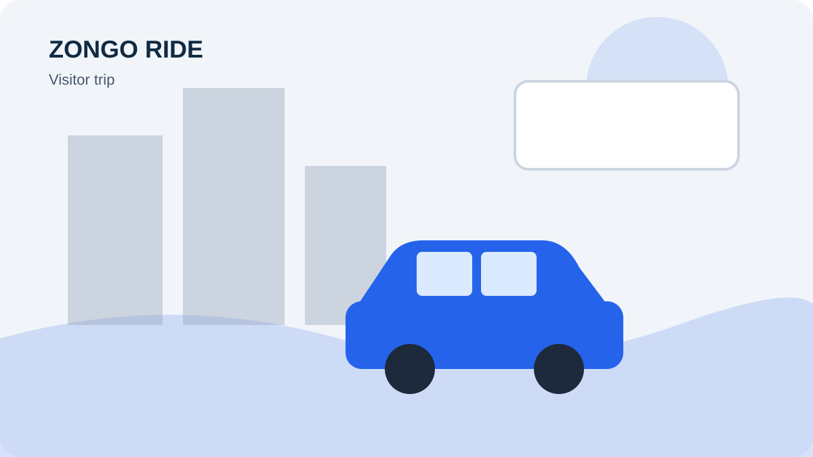

DRIVER GROWTH · PASSENGERS · EARNINGS
How to Grow a Small Ride Service With One Car
A sustainable driving business is built on reliable service, sensible pricing, repeat customers and careful cost control. Treat every booking as part of a business system that you can measure and improve.

How to Grow a Small Ride Service With One Car is a question many current and prospective drivers ask when they want to make driving more organised and commercially worthwhile. The best approach is to build a service passengers can understand and trust, then measure whether each trip is worth the time and cost. This guide sets out practical steps you can adapt to your local market.
Define the service and the customer
Decide whether your focus is local trips, pre-booked journeys, business travel, airport transfers or intercity travel. Different passengers value different things, so describe your service to the people most likely to need it. Do not advertise services or vehicle features you cannot provide.
Make the passenger decision easier
Passengers should not have to guess where you operate or how to book. Put the most useful information near the top of your profile: service area, vehicle, routes, price basis and availability. Remove old promotions and correct details that could cause confusion.
Create repeatable operating habits
Use a consistent process for checking the vehicle, confirming bookings, communicating delays, recording income and reviewing expenses. A simple spreadsheet or notebook can reveal which routes and time periods work best. Keep records securely and respect passenger privacy.
Improve one part of the business at a time
Review feedback, cancellations, late arrivals, operating costs and repeat enquiries. Choose one issue to improve each week. Small changes—such as clearer route descriptions or faster replies—can have a measurable effect when applied consistently.
Put the advice into action
Start with one clear improvement rather than changing everything at once. Update your driver information, choose a manageable route or schedule, calculate the costs and make sure passengers can understand how to enquire. Track what happens over the next several weeks. If a route produces too much unpaid waiting or too many empty return journeys, reconsider its price or availability.
Keep your service professional as it grows. Be punctual, communicate honestly, respect passenger privacy and follow local transport and insurance requirements. Never rely on an online article as a substitute for checking the rules where you operate. Your long-term reputation depends on safe, reliable journeys and accurate information.
How Zongo Ride can support your driver visibility
Drivers can visit Zongo Ride to learn about the service and access the available driver registration route. Where driver onboarding and route listings are available, complete the requested information, publish genuine routes and fares, and keep availability updated. Passengers make their own booking decisions, so a complete profile and responsive service are important. No platform can promise a specific number of passengers or a guaranteed income.
Driver takeaway: Make your offer clear, price trips responsibly, keep your information current and use every completed journey as an opportunity to improve the service.